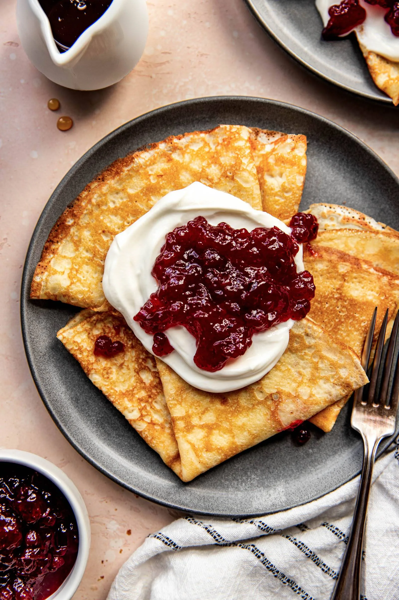
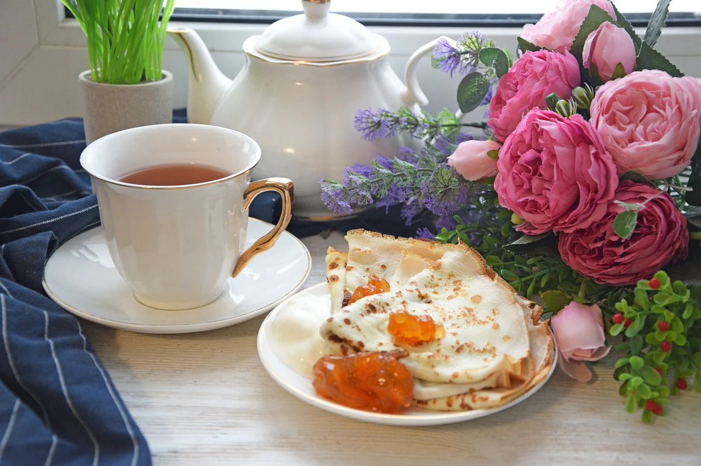
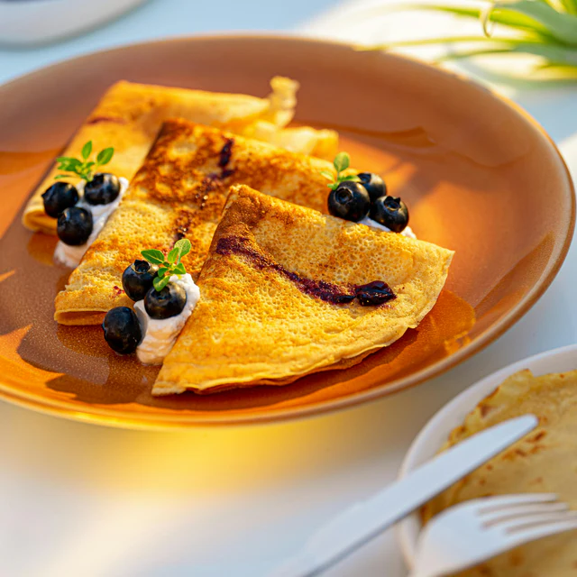

Enkelt recept på pannkakor
Ett enkelt och gott pannkaksrecept som passar perfekt till frukost eller dessert.
Ingredienser
- 2 dl mjöl
- 3 ägg
- 4 dl mjölk
- 1 tsk salt
- 2 msk smör
- 1 tsk vanilj
Så här gör du
- Blanda mjöl och salt
- Vispa ägg, mjölk och smör
- Blanda ihop allt
- Låt smeten vila i 15 min
- Stek pannkakor
- Servera med sylt och grädde
Serveringsförslag

